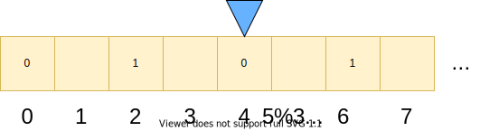

Le problème de la décision (Entscheidungproblem)
Les deux grandes familles de langages informatiques (langages impératifs et langages fonctionnels) sont nés en cherchant à répondre à une question formulée plusieurs fois par David Hilbert (mathéméticien allemand) à partir de 1900 et publiée en 1928 :
Existe-t-il un processus permettant de déterminer en un nombre fini d'opérations
si une assertion de la logique du premier ordre est vraie ?
si une assertion de la logique du premier ordre est vraie ?
Autrement dit : si on a une assertion logique, existe-t-il toujours un moyen de savoir si elle est vraie, ou existe-t-il des assertions indécidables ?
Peut-on savoir si un système logique est décidable ou pas ?
La réponse est "non" : il peut exister des assertions qu'on ne peut pas démontrer.
Cette réponse a été trouvée de deux manières différentes presque simultanément en 1936.
-
Alan Turing a répondu en inventant pour l'occasion la machine de Turing.
Cette approche a fourni une base théorique aux langages impératifs. -
Alonzo Church a répondu en inventant le lambda-calcul (lambda = lettre grecque λ).
Cette approche a fourni une base théorique aux langages fonctionnels.
L'équivalence entre les machines de Turing et le lambda-calcul a été démontré par Turing en 1937 :
Une fonction est calculable par une machine de Turing si et seulement si elle est calculable en utilisant le lambda-calcul.
Autrement dit, tout problème pouvant être résolu en programmation impérative peut l'être en programmation fonctionnelle, et vice-versa.
La décidabilité est une des caractéristiques qu'un système de déduction devrait satisfaire ; les autres caractéristiques sont :
- la complétude
- la correction
- la cohérence
La machine de Turing
Une machine de Turing est un automate avec une tête de lecture et une bande de papier faite de cases ; qui ne peut exécuter qu'un nombre très limité d'opérations (lire une case, écrire, effacer, aller à la case de droite, aller à la case de gauche) ; qui peut mémoriser son état ; qui peut prendre une décision en fonction de la valeur de la case courante et de l'état courant de la machine.
La machine de Turing a servi de modèle pour le "paradigme impératif". Un programme est une suite d'instructions qui indiquent quoi faire à la machine, en s'appuyant sur la notion d'état d'une machine (état de sa mémoire).
La machine de Turing sera abordée plus en détail (voir cette page).
Le lambda-calcul
Le lambda-calcul est un système dans lequel tout est fonction et doté d'une seule opération : l'application d'une fonction à une autre. Tout est lambda-expression ; toute expression est remplacée par une fonction.Par exemple
3x + 1 est remplacé par la fonction qui à x associe 3x + 1 ; on note : λx.3*x+1
Le lambda calcul n'utilise que deux notations :
-
Abstraction
λx.Mdésigne une fonction anonyme dont le paramètre est notéxet dont le corps est notéM.
Si M est une λ-expression, λx.M est aussi une λ-expression et représente la fonction qui à x associe M.
(noter le point qui sépare le nom du paramètre et le corps de la fonction) -
Application
MN: désigne l'application de la fonctionMavec comme paramètreN; on est habitués à noter plutôtM(N).
(λx.M)N → β M[x:=N]
Appliquer la λ expression
λx.M au paramètre N revient au même que de remplacer x par N dans le corps de la fonction M.
Le lambda calcul a servi de modèle pour le "paradigme fonctionnel". "Tout est fonction" ; les notions fondamentales sont celles de fonction, de valeur, d'application d'une fonction à une valeur.
Parenthèse mathématique
Voir les pages "Ensembles", "Catégories", "Fonctions".Fonctions
Dans un langage fonctionnel "pur", le terme fonction est à prendre au sens mathématique du terme.f(x) = y.
En informatique, cela se traduit par une fonction qui prend
x en paramètre et renvoie y :
// isVoyelle('a') = true
// isVoyelle('r') = false
boolean isVoyelle(char c){ ... }
Une fonction transforme un type de donnée en un autre :
char -- isVoyelle() --> boolean
Fonction pure
Une fonction est dite pure si elle n'a pas d'effet de bord ; pour une valeur donnée d'un argument, la valeur du retour sera toujours la même.En pratique, quand on programme, les fonctions ne sont pas pures, elles peuvent :
- Renvoyer des erreurs ou exceptions.
- Dépendre de l'extérieur de la fonction (par ex. variables globales, date et heure de l'exécution, disponibilité d'une ressource extérieure).
- Modifier le système (écrire dans un fichier, une base de données).
test() suivante n'est pas pure.
class ExempleFonctionImpure {
private static int i = 0;
public static String test(int j){
i += j;
return i;
}
}
En effet, test(1) va renvoyer 1 au premier appel, puis 2 au second appel etc.
La transparence référentielle est une propriété d'une expression : on peut la remplacer par sa valeur sans changer le comportement du programme. Cette propriété n'est pas vérifiée par la fonction
test().
Mais les caractéristiques "impures" des fonctions peuvent être construites à partir de la définition mathématique d'une fonction.
Mémoïsation
Si une fonction est pure, pour un argument donné elle renvoie toujours la même valeur.On peut donc fabriquer un cache : enregistrer dans un tableau toutes les valeurs possibles que peut prendre le argument, avec la valeur de retour de la fonction. on dit qu'on peut la mémoïser.
Que l'on renvoie la valeur calculée ou la valeur stockée dans le cache, on aura le même résultat.
On dit que la fonction est mémoïsable.
En pratique, on ne peut pas le faire pour des types infinis (dont le cardinal de l'ensemble des valeurs du type est infini).
Curryfication
La notion de fonction pure est plus large que la notion mathématique de fonction ; en effet, une fonction pure peut avoir plusieurs arguments en entrée (et dans certains langages renvoyer plusieurs valeurs).Mais on peut transformer une fonction prenant plusieurs arguments en une fonction prenant le premier argument et renvoyant une fonction prenant les arguments suivants. Ce procédé s'appelle la curryfication (le nom vient de Haskel Curry).
Exemple en PHP :
<?php
function uncurried_add($x, $y){
return $x + $y;
}
// Avant PHP 7.4
function curried_add($x){
return function($y) use($x) { return $x + $y; };
}
// Depuis PHP 7.4 ("arrow functions")
function curried_add2($x){
return fn($y) => $x + $y;
}
echo "uncurried_add(3, 5) = " . uncurried_add(3, 5) . "\n";
echo "curried_add(3)(5) = " . curried_add(3)(5) . "\n";
echo "curried_add2(3)(5) = " . curried_add2(3)(5) . "\n";
(code source)
Voir aussi un exemple en java.
Vocabulaire :
Une fonction d'ordre supérieur est une fonction qui prend en paramètre une fonction ou qui renvoie une fonction.
Functions as first class citizens
Les fonctions font partie des types connus des langages fonctionnels ; elles peuvent être- nommées
- évaluées
- passées comme argument
- renvoyées comme résultat
- utilisées partout où une expression peut l'être.
Langages impératifs et fonctionnels
On se retrouve donc avec deux manières de programmer équivalentes mais différentes.Exemple : factorielle
En java :
public class Factorial{
public static int compute(int n){
int res = 1;
for (int c = 1; c <= n; c++)
res = res * c;
return res;
}
}
En ~ lambda-calcul :
λ n.if n=0 then 1 else n*(fact (n-1))En Ocaml :
let rec fact =
function n -> if n=0 then 1 else n*(fact (n-1))
En Haskell :
factorial n = if n < 2
then 1
else n * factorial (n - 1)
ou
factorial 0 = 1 factorial n = n * factorial (n - 1)
(defun factorial (n)
(if (= n 1)
1
(* n (factorial (- n 1)))))
Dans un langage purement fonctionnel, une fonction ne fait qu'une seule chose : elle prend un (ou plusieurs) argument(s) en entrée et renvoie une valeur en sortie.
Le corps de la fonction est comme un gros return, on se concentre sur ce qu'on renvoie, pas ce qu'on fait entre temps.
La syntaxe facilite cette orientation.
Par exemple en java,
if then else est une instruction composée, qui fait des choses. En Ocaml, c'est une expression, qui calcule la valeur d'un type.
Un concensus
L'introduction des lambda expressions en java correspond à un mouvement de fond dans de nombreux langages impératifs.Un consensus a peu à peu émergé : les langages fonctionnels sont plus faciles à tester, débugger et paralléliser que les langages impératifs.
Depuis java 8, java est décrit par Oracle comme "légèrement fonctionnel" : fournit par convenance les idiomes fonctionnels les plus souvent utilisés. Mais java ne possède pas de type "fonction".